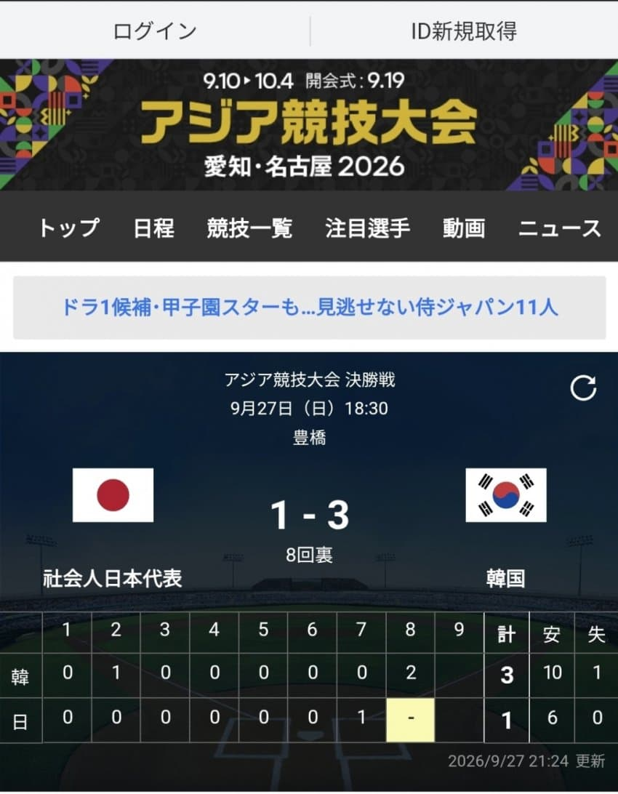

일본 vs 한국이 아니라
사회인일본대표 vs 한국 ㅋㅋㅋ
니들이 이긴건 "사회인일본대표"라고 ㅋㅋ
음습하기로는 진짜 얘네들 못이길듯

일본 vs 한국이 아니라
사회인일본대표 vs 한국 ㅋㅋㅋ
니들이 이긴건 "사회인일본대표"라고 ㅋㅋ
음습하기로는 진짜 얘네들 못이길듯
원종단 쉐도우복싱하는 애들은 ㄹㅇ 일본애들한태 처맞음?
마 이게 애국이다
아몰랑 야구안봐 댓글은 너무하네 ㅋㅋ 너가 음습하다고 취급한거랑 동급임
ㅇㅈ함... 개드립 갈 생각에 신나서 안 알아보고 렉카한 내 잘못이지....
근데 궁금한데
일본은 사회인들이 결승까지 올라온거임?? 그것도 대단한거 아닌가 야구 안봐서 몰라
존나 대단한거 맞긴함 나도 직장다니면서 공부고 운동이고 뭐고 할 시간 없던데 ㄷ
음습한 nippon
일본은 야구에 대한 인식자체가 우리나라랑 비교도 안되지 않나?
일본에서 표기를 어떻게 하든말든, 우리가 비벼볼 만한 애들로만 출전시켜서 그저 감사할 따름임. 저쪽에서 정신승리 좀 하면 뭐 어떠냐?